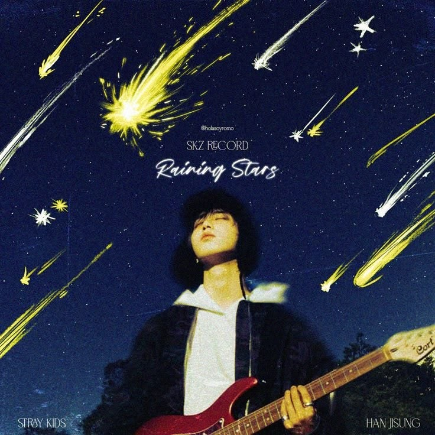

THE TRACK / LYRICRACHA
Raining Stars
HAN
- ALBUM
- SKZ-REPLAY 2026 Pt.1
- RELEASE
- 2025.12.27
- UPDATED
- 2026.08.28
- LANGUAGE
- KOREAN / ENGLISH
- LYRICS
- HAN (3RACHA)、(Vendors)Helixx
- COMPOSED
- HAN (3RACHA)、(Vendors)Helixx
02 / THE VOICES
Part Colors
03 / LYRIC DATABASE
Lyrics
イェー
Yeah
そうさ
レイニング オール デイ レイニング オール デイ ライク スターズ アハ
Raining all day, raining all day like stars, uh-huh
一日中、星のように降り注ぐ
イェー レイニング オール デイ レイニング オール デイ ライク スターズ
Yeah, raining all day, raining all day like stars
そう、一日中、星のように降り注ぐ
アイ ジャスト ウォント トゥ ショウ ユー アイ ジャスト ウォント トゥ ビー ウィズ ユー
I just want to show you, I just want to be with you
君に見せたい、君と一緒にいたい
イェー イェー イェー
Yeah, yeah, yeah
イェー、イェー、イェー
あまど はん だる じょんっちゅみんが
아마도 한 달 전쯤인가
たぶん一か月ほど前だったかな
うすす っとろじぬん びょるどぅり ちゅむちゅどん くなる
우수수 떨어지는 별들이 춤추던 그날
星たちがぱらぱらと降って踊っていたあの日
むすひ まぬん せんがく じゅん ちぇいる もんじょ どぅん ご のわ
무수히 많은 생각 중 제일 먼저 든 거 너와
数えきれない思いの中で真っ先に浮かんだのは
はむっけ いったみょん ちゃむ へんぼかげった
함께 있다면 참 행복하겠다
君と一緒にいられたら幸せだろうなってこと
ね かじゃん くん かむじょんうる たむだんはぬん のわ ふんなる
내 가장 큰 감정을 담당하는 너와 훗날
僕のいちばん大きな感情を占める君といつの日か
よんうぉぬる まらご なのる す いったみょん ちょけった
영원을 말하고 나눌 수 있다면 좋겠다
永遠を語り合えたらいいな
ぷるっすく ちゃじゃおん そんむるる もん なのん あしうむる たまそ
불쑥 찾아온 선물을 못 나눈 아쉬움을 담아서
突然届いた贈り物を分け合えなかった寂しさを込めて
ぽねぬん い のれぬん ね まうみや ぱだ
보내는 이 노래는 내 마음이야 받아
贈るこの歌は僕の気持ちだよ、受け取って
ちゅうん きょうるぱむ ね まめ おんどぬん っとぅごうん よるむぐぁ がた（ウー ウー）
추운 겨울밤 내 맘의 온도는 뜨거운 여름과 같아 (Ooh, ooh)
寒い冬の夜、僕の心の温度は暑い夏のよう
くるむ てぃろ さらじぬん びょるる ぽに あしぷこ するぷん まむまん（オー ベイブ）
구름 뒤로 사라지는 별을 보니 아쉽고 슬픈 맘만 (Oh, babe)
雲の向こうへ消える星を見ると切なさと悲しさだけが残る
くぴ うぃろ とぅるりん かめらえ っちきょっとん ごん あんげわ っかむっかめっとん
급히 위로 들린 카메라에 찍혔던 건 안개와 깜깜했던
慌てて空に向けたカメラに写ったのは霧と真っ暗な
ひょんぴょのぷとん さじんっぷにじまん ほくし のぬん い まむる あるっか（アー イェー）
형편없던 사진뿐이지만 혹시 너는 이 맘을 알까? (Ah, yeah)
ひどい写真だけだけど、君はこの気持ちに気づくだろうか
レイニング スターズ ぽごぷん ぱむ ねげ ちゅご しぷとん なる
Raining stars, 보고픈 밤, 네게 주고 싶던 날
星が降る、君に会いたい夜、君に贈りたかった日
はんっこっ かどぅき たむこ しぽっとん スカイ（オー ベイビー）
한껏 가득히 담고 싶었던 sky (Oh, baby)
目いっぱい詰め込んでおきたかった空
レイニング スターズ おっとはん なる ぽだ と あるむだぷとん なる
Raining stars, 어떠한 날, 보다 더 아름답던 날
星が降る、どんな日よりも美しかった日
ぴょるどぅる ぴおなん はぬる あれ のわ な イェー
별들 피어난 하늘 아래 너와 나, yeah
星が咲いた空の下、君と僕
イェー むるっくろみ なるる ぽみょん ぷっくろみ どぇ（ブルル）
Yeah, 물끄러미 나를 보면 부끄럼이 돼 (Brr)
君がじっと僕を見ると恥ずかしくなる
っすくすろぷち こげ とるりょ ちれじん ぽる レッド（ハッ）
쑥스럽지 고개 돌려 칠해진 볼 red (Huh)
照れくさくて顔をそむける、赤く染まった頬
ちょ はぬれそ っそだじん ゆそんどぅる
저 하늘에서 쏟아진 유성들
あの空から降り注いだ流星たち
ね まむる ぴょひょなじゃみょん ちょむ と くん どぅっ うんそくっちゅむ（しゅん しゅん しゅん）
내 맘을 표현하자면 좀 더 큰 듯 운석쯤 (슝, 슝, 슝)
僕の気持ちを表すなら、もっと大きな隕石くらいかな
みょっ くぁんにょぬる たるりょ ねげろ おん どぅたん い まみ
몇 광년을 달려 네게로 온 듯한 이 맘이
何光年も駆け抜けて君のもとに来たようなこの気持ちは
こじっ はな あん ぽてご ちんしみごどぅん たり
거짓 하나 안 보태고 진심이거든 달리
嘘を一つも交えない本心なんだ
ぴょひょなる ぱんぼび おでぃ おぷするっか へっとに
표현할 방법이 어디 없을까 했더니
伝える方法はないかなって思っていたら
ちょ うぃえそ ねりょ じょんなば ぴょる そなぎる な てしん
저 위에서 내려 줬나봐 별 소나길 나 대신
あの空が僕の代わりに星の夕立を降らせてくれたみたい
ちゅうん きょうるぱむ ね まめ おんどぬん っとぅごうん よるむぐぁ がた（ウー ウー）
추운 겨울밤 내 맘의 온도는 뜨거운 여름과 같아 (Ooh, ooh)
寒い冬の夜、僕の心の温度は暑い夏のよう
くるむ てぃろ さらじぬん びょるる ぽに あしぷこ するぷん まむまん（オー ベイブ）
구름 뒤로 사라지는 별을 보니 아쉽고 슬픈 맘만 (Oh, babe)
雲の向こうへ消える星を見ると切なさと悲しさだけが残る
くぴ うぃろ とぅるりん かめらえ っちきょっとん ごん あんげわ っかむっかめっとん（オー オー）
급히 위로 들린 카메라에 찍혔던 건 안개와 깜깜했던 (Oh, oh)
慌てて空に向けたカメラに写ったのは霧と真っ暗な景色
ひょんぴょのぷとん さじんっぷにじまん ほくし のぬん い まむる あるっか（マイ ベイブ）
형편없던 사진뿐이지만 혹시 너는 이 맘을 알까? (My babe)
ひどい写真だけだけど、君はこの気持ちに気づくだろうか
レイニング スターズ ぽごぷん ぱむ ねげ ちゅご しぷとん なる
Raining stars, 보고픈 밤, 네게 주고 싶던 날
星が降る、君に会いたい夜、君に贈りたかった日
はんっこっ かどぅき たむこ しぽっとん スカイ（オー ベイビー）
한껏 가득히 담고 싶었던 sky (Oh, baby)
目いっぱい詰め込んでおきたかった空
レイニング スターズ おっとはん なる ぽだ と あるむだぷとん なる
Raining stars, 어떠한 날, 보다 더 아름답던 날
星が降る、どんな日よりも美しかった日
ぴょるどぅる ぴおなん はぬる あれ のわ な イェー（ヘイ）
별들 피어난 하늘 아래 너와 나, yeah (Hey)
星が咲いた空の下、君と僕
ワット ア パーフェクト ナイト エイヨー
What a perfect night, a-yo
なんて完璧な夜なんだ
のど なわ がとぅん ぱむる ぽるっか エイヨー
너도 나와 같은 밤을 볼까? A-yo
君も僕と同じ夜を見ているかな
ね もり うぃろ っそだじん ゆそうぬん あま さしる
내 머리 위로 쏟아진 유성우는 아마 사실
僕の頭上に降り注いだ流星雨は、きっと本当は
ねげ ちゅご しぷとん ね まうみん ごや イェー
네게 주고 싶던 내 마음인 거야, yeah
君に贈りたかった僕の気持ちなんだ
レイニング スターズ ぽごぷん ぱむ ねげ ちゅご しぷとん なる（ウー）
Raining stars, 보고픈 밤, 네게 주고 싶던 날 (Ooh)
星が降る、君に会いたい夜、君に贈りたかった日
はんっこっ かどぅき たむこ しぽっとん スカイ（マイ ベイビー）
한껏 가득히 담고 싶었던 sky (My baby)
目いっぱい詰め込んでおきたかった空
レイニング スターズ おっとはん なる ぽだ と あるむだぷとん なる
Raining stars, 어떠한 날, 보다 더 아름답던 날
星が降る、どんな日よりも美しかった日
ぴょるどぅる ぴおなん はぬる あれ のわ な イェー
별들 피어난 하늘 아래 너와 나, yeah
星が咲いた空の下、君と僕